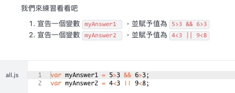
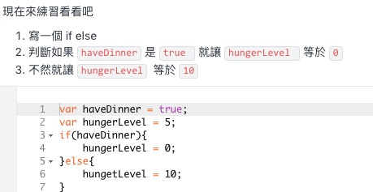
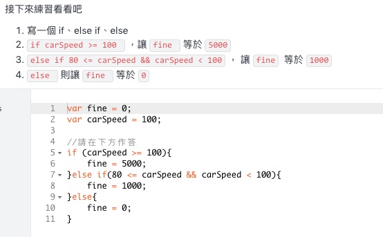
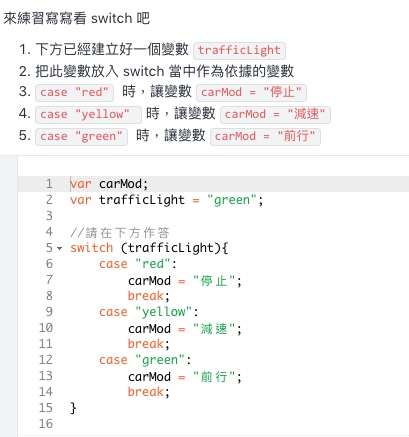
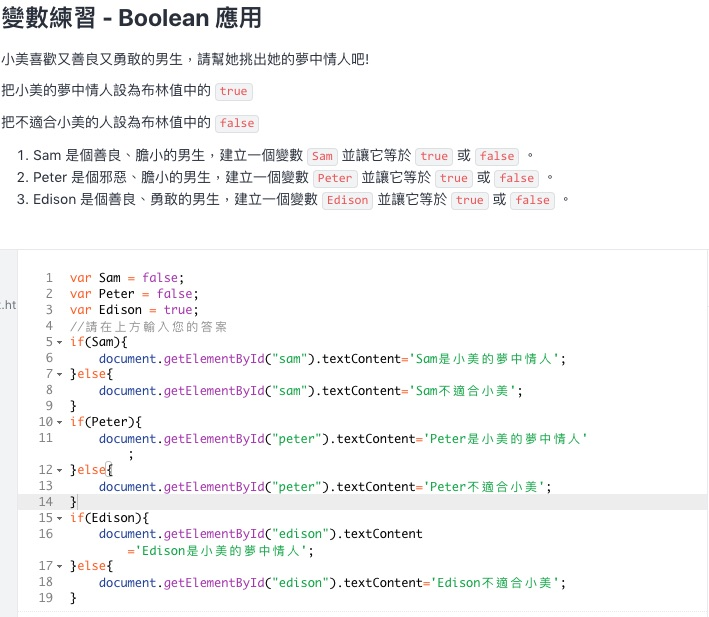

習題練習





Switch Case練習
今日天氣：還沒選擇喔~

document.getElementById("weatherID").addEventListener("change", printWeather); //當下拉選單切換還擇時 執行函數
function printWeather() {
var v = document.getElementById(this.id).value; //下拉選單option 的value
var idx = document.getElementById(this.id).selectedIndex; //下拉選單被選中的option 序號
var txt = document.getElementById(this.id).options[idx].text; //下拉選單被選中的option 的文字
document.getElementById('weatherTxt').textContent = txt;
switch(v){
case 'sunny':
document.getElementById('weatherImg').src = "assets/img/sunny.svg";
break;
case 'rainy':
document.getElementById('weatherImg').src = "assets/img/rainy.svg";
break;
case 'cloudy':
document.getElementById('weatherImg').src = "assets/img/cloudy.svg";
break;
default:
document.getElementById('weatherImg').src = "assets/img/default.svg";
break;
}
}